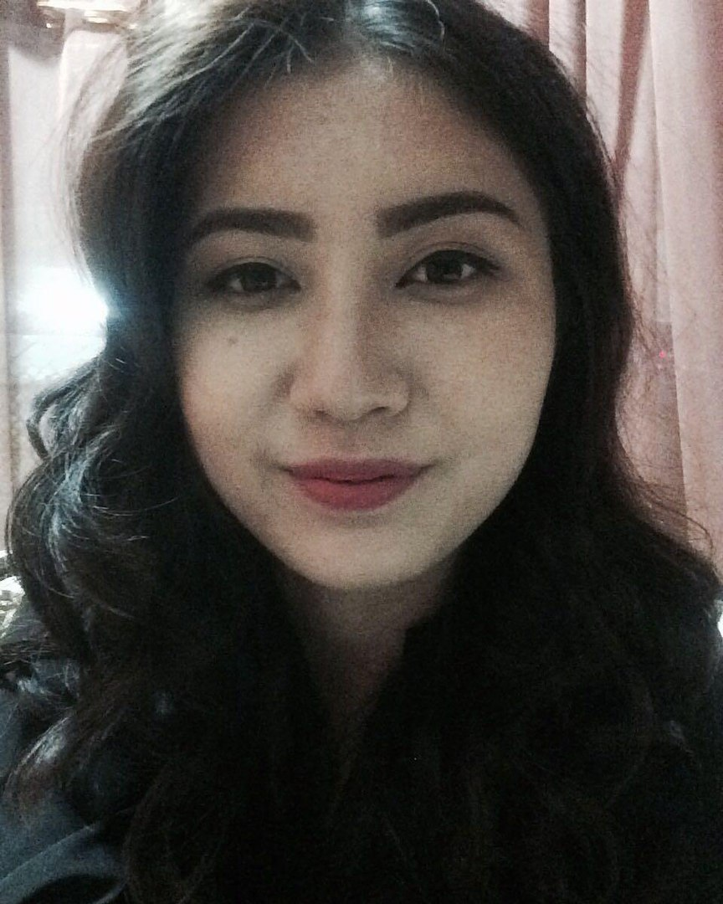
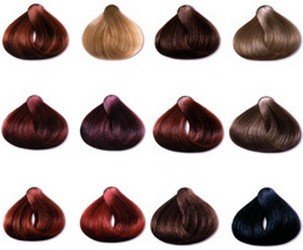

05 қазанда жарияланды, 2017 жылы. Жариялаған Администратор
Дұрыс шаш түсін таңдау
Нәзік жандылардың шаш бояуына түрлі жағдайлар себеп болады: табиғи түс ұнамайды, сыртқы келбетке өзгеріс енгізу құлшынысы, шашқа ақ түсу, шаштың зақымдалуы т.б. Расымен де, жаңа шаш түсі адамды қатты өзгерте алады. Бояу түсі дұрыс таңдалса, көзіңіз жарқырап, беттің реңі біркелкі бола түседі. Дұрыс таңдалмаған жағдайда, ұсақ әжімдер мен дақтар бірден байқалатын болады. Әрі бірнеше жасқа кәрі көрінесіз. Сол себептен де, бояу түсін дұрыс таңдауды үйреніп алған жөн. Дүкенге бармас бұрын, айнаға жақсылап қараңыз. Ең бірінші көздің түсін, терінің реңін, шаштың табиғи түсін назарға алыңыз. Мәселен, жылы түстер бетті нәзік әрі албырт етіп көрсетеді. Ал табиғат ажарыңызға қызғылт реңді тарту етіп қойған болса, суық, қоңыр қызыл, құм, күл реңдерді таңдау керек. 